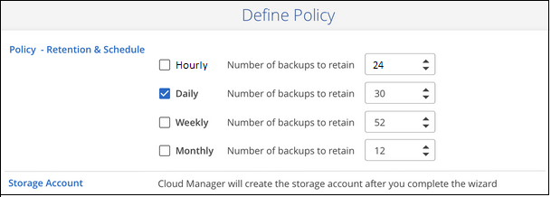
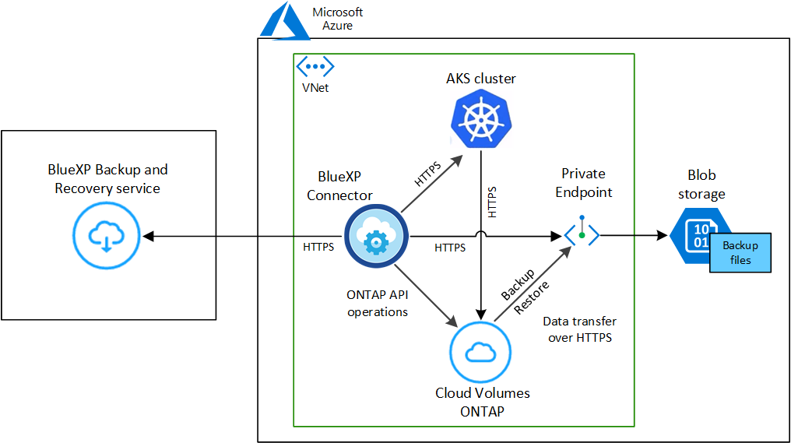
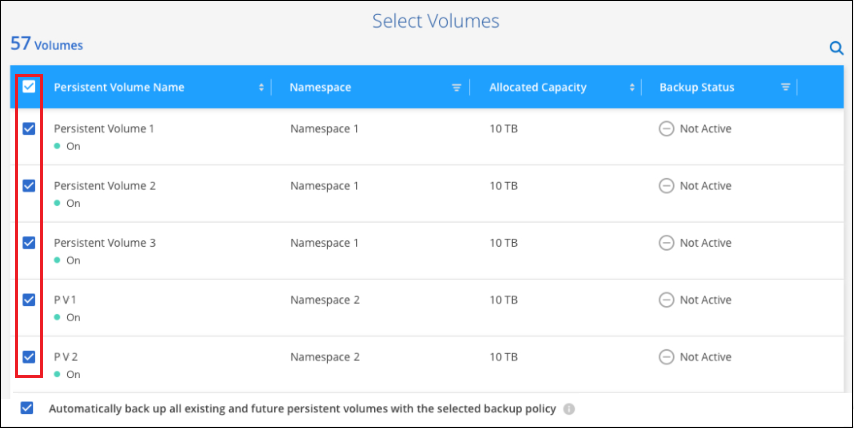

发行说明
发行说明
将 Kubernetes 永久性卷数据备份到 Azure Blob 存储
 建议更改
建议更改
完成几个步骤，开始将数据从 AKS Kubernetes 集群上的永久性卷备份到 Azure Blob 存储。
快速入门
按照以下步骤快速入门，或者向下滚动到其余部分以了解完整详细信息。
 查看前提条件
查看前提条件-
您已将Kubernetes集群发现为一个BlueXP工作环境。
-
集群上必须安装 Trident ，并且 Trident 版本必须为 21.1 或更高版本。
-
要用于创建要备份的永久性卷的所有 PVC 都必须将 "snapshotPolicy" 设置为 "default" 。
-
集群必须使用 Azure 上的 Cloud Volumes ONTAP 作为其后端存储。
-
Cloud Volumes ONTAP 系统必须运行 ONTAP 9.7P5 或更高版本。
-
-
您已为备份所在的存储空间订阅了有效的云提供商。
-
您已订阅 "BlueXP Marketplace备份服务"或您已购买 "并激活" NetApp提供的BlueXP备份和恢复BYOL许可证。
 在现有Kubernetes集群上启用BlueXP备份和恢复
在现有Kubernetes集群上启用BlueXP备份和恢复选择工作环境、然后单击右侧面板中备份和恢复服务旁边的*启用*、然后按照设置向导进行操作。

 定义备份策略
定义备份策略默认策略每天备份卷，并保留每个卷的最新 30 个备份副本。更改为每小时，每天，每周或每月备份，或者选择一个提供更多选项的系统定义策略。您还可以更改要保留的备份副本数。

 选择要备份的卷
选择要备份的卷在选择卷页面中确定要备份的卷。备份文件将使用与 Cloud Volumes ONTAP 系统相同的 Azure 订阅和区域存储在 Blob 容器中。
要求
在开始将 Kubernetes 永久性卷备份到 Blob 存储之前，请阅读以下要求，以确保您的配置受支持。
下图显示了每个组件以及需要在它们之间准备的连接：

请注意，私有端点是可选的。
- Kubernetes 集群要求
-
-
您已将Kubernetes集群发现为一个BlueXP工作环境。 "了解如何发现 Kubernetes 集群"。
-
集群上必须安装 Trident ，并且 Trident 版本必须至少为 21.1 。请参见 "如何安装 Trident" 或 "如何升级 Trident 版本"。
-
集群必须使用 Azure 上的 Cloud Volumes ONTAP 作为其后端存储。
-
Cloud Volumes ONTAP 系统必须与Kubernetes集群位于同一Azure区域、并且必须运行ONTAP 9.7P5或更高版本(建议使用ONTAP 9.8P11及更高版本)。
请注意，不支持内部位置中的 Kubernetes 集群。仅支持使用 Cloud Volumes ONTAP 系统的云部署中的 Kubernetes 集群。
-
要用于创建要备份的永久性卷的所有永久性卷声明对象都必须将 "snapshotPolicy" 设置为 "default" 。
您可以通过在标注下添加
snapshotPolicy来为单个 PVC 执行此操作：kind: PersistentVolumeClaim apiVersion: v1 metadata: name: full annotations: trident.netapp.io/snapshotPolicy: "default" spec: accessModes: - ReadWriteMany resources: requests: storage: 1000Mi storageClassName: silver您可以通过在
backend.json文件的 defaults 下添加snapshotPolicy字段来为与特定后端存储关联的所有 PVC 执行此操作：apiVersion: trident.netapp.io/v1 kind: TridentBackendConfig metadata: name: backend-tbc-ontap-nas-advanced spec: version: 1 storageDriverName: ontap-nas managementLIF: 10.0.0.1 dataLIF: 10.0.0.2 backendName: tbc-ontap-nas-advanced svm: trident_svm credentials: name: backend-tbc-ontap-nas-advanced-secret limitAggregateUsage: 80% limitVolumeSize: 50Gi nfsMountOptions: nfsvers=4 defaults: spaceReserve: volume exportPolicy: myk8scluster snapshotPolicy: default snapshotReserve: '10' deletionPolicy: retain
-
- 许可证要求
-
对于BlueXP备份和恢复PAYGO许可、在启用BlueXP备份和恢复之前、需要通过Azure Marketplace订阅。BlueXP备份和恢复的计费通过此订阅完成。 "您可以从工作环境向导的详细信息和 amp ；凭据页面订阅"。
对于BlueXP备份和恢复BYOL许可、您需要NetApp提供的序列号、以便在许可证有效期和容量内使用此服务。 "了解如何管理 BYOL 许可证"。
您需要为备份所在的存储空间订阅 Microsoft Azure 。
- 支持的 Azure 区域
-
所有Azure地区均支持BlueXP备份和恢复 "支持 Cloud Volumes ONTAP 的位置"。
启用BlueXP备份和恢复
随时直接从Kubernetes工作环境启用BlueXP备份和恢复。
-
选择工作环境、然后单击右面板中备份和恢复服务旁边的*启用*。
-
输入备份策略详细信息并单击 * 下一步 * 。
您可以定义备份计划并选择要保留的备份数。
-
选择要备份的永久性卷。
-
要备份所有卷，请选中标题行（
 ）。
）。 -
要备份单个卷，请选中每个卷对应的框（
 ）。
）。
-
-
如果您希望所有当前卷和未来卷都启用备份、只需选中"自动备份未来卷…"复选框即可。如果禁用此设置、则需要手动为未来的卷启用备份。
-
单击*激活备份*、BlueXP备份和恢复将开始对每个选定卷进行初始备份。
备份文件将使用与 Cloud Volumes ONTAP 系统相同的 Azure 订阅和区域存储在 Blob 容器中。
此时将显示 Kubernetes 信息板，以便您可以监控备份的状态。
您可以 "启动和停止卷备份或更改备份计划"。您也可以 "从备份文件还原整个卷" 作为 Azure 中相同或不同 Kubernetes 集群上的新卷（位于同一区域）。